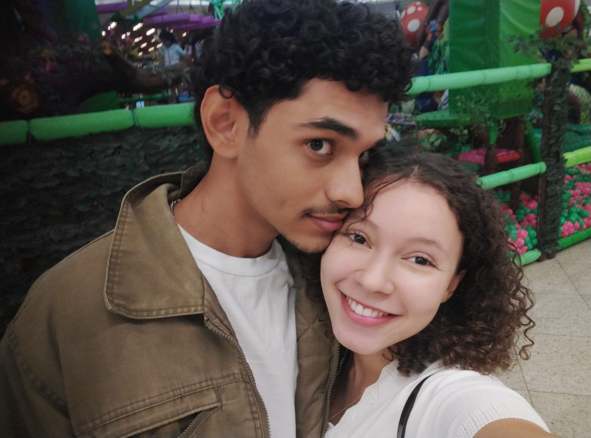
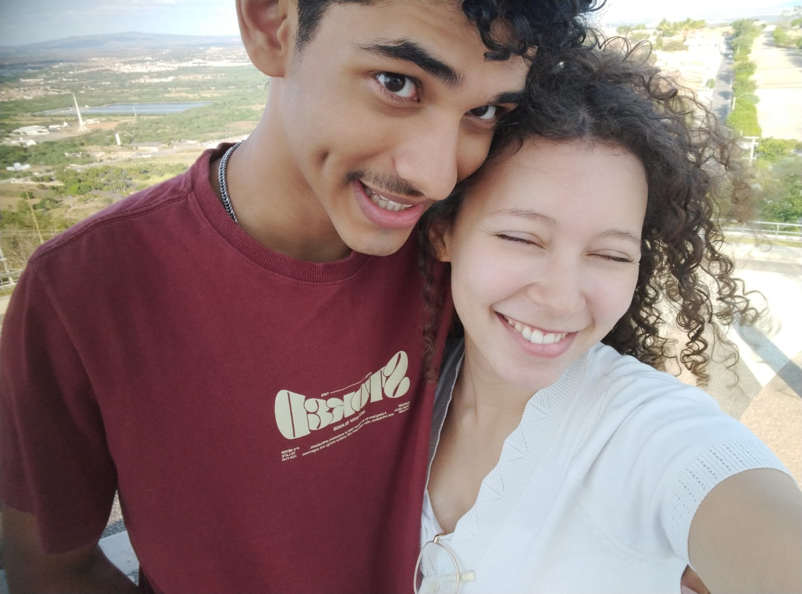
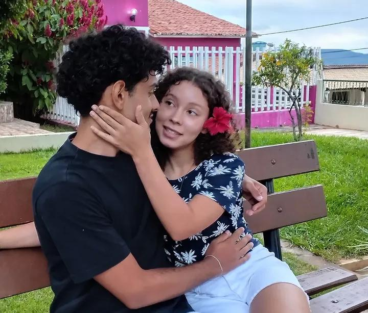
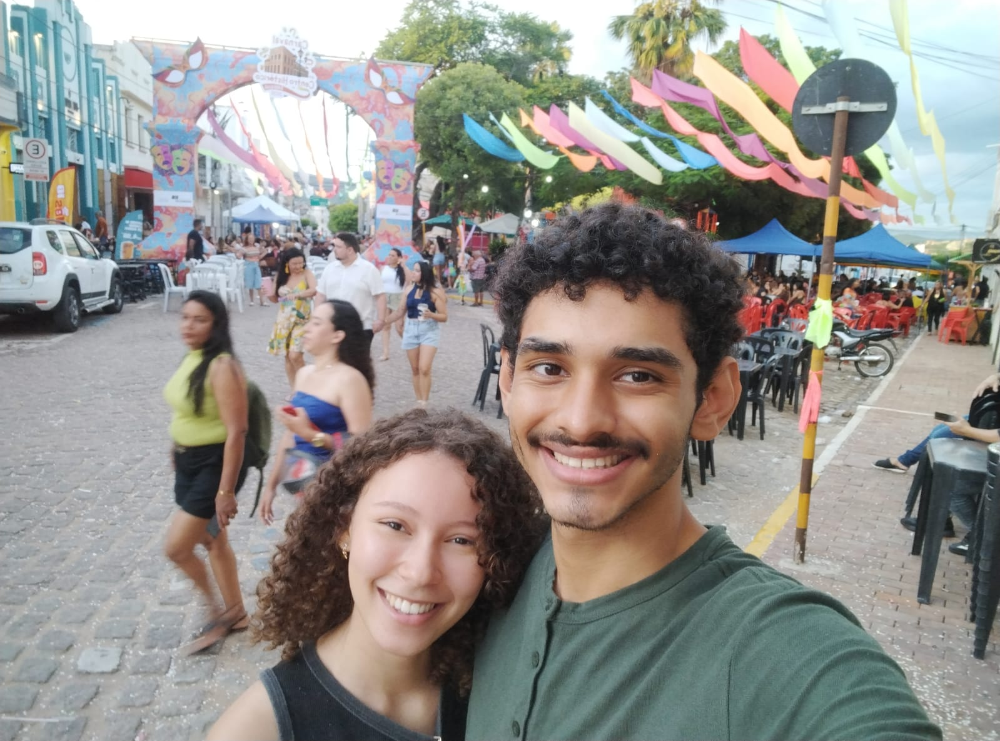
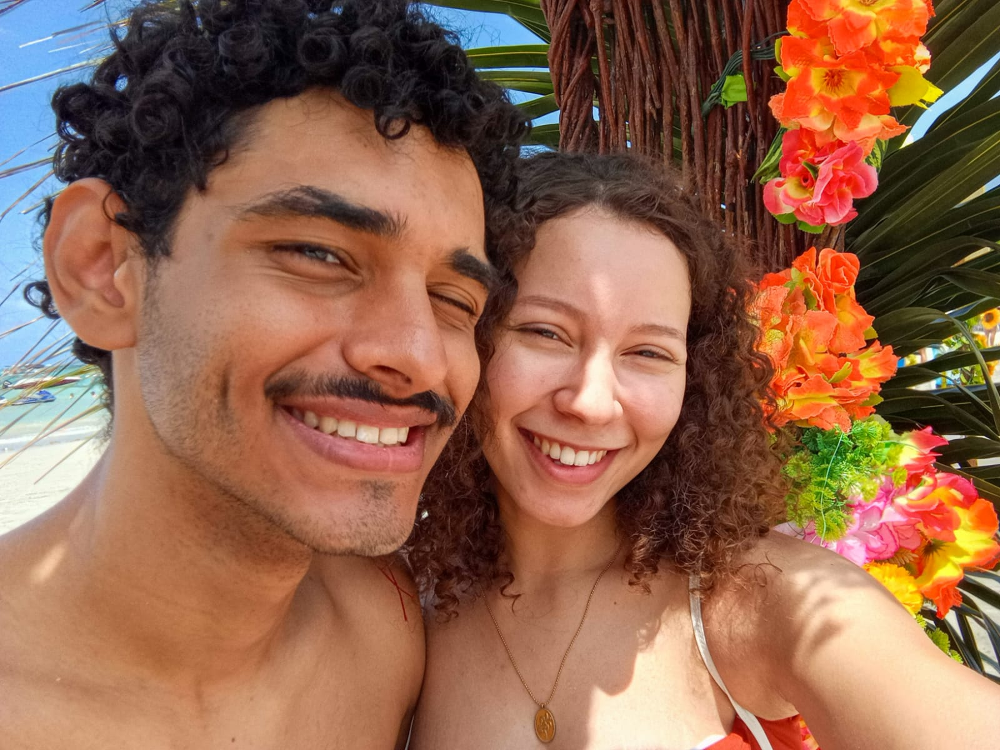
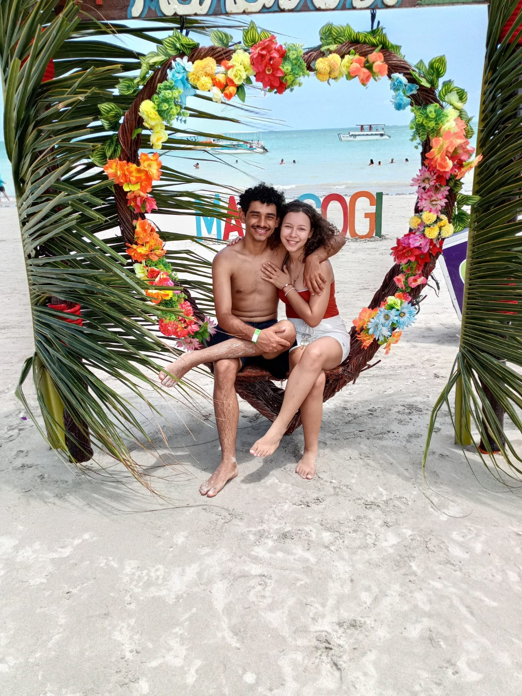
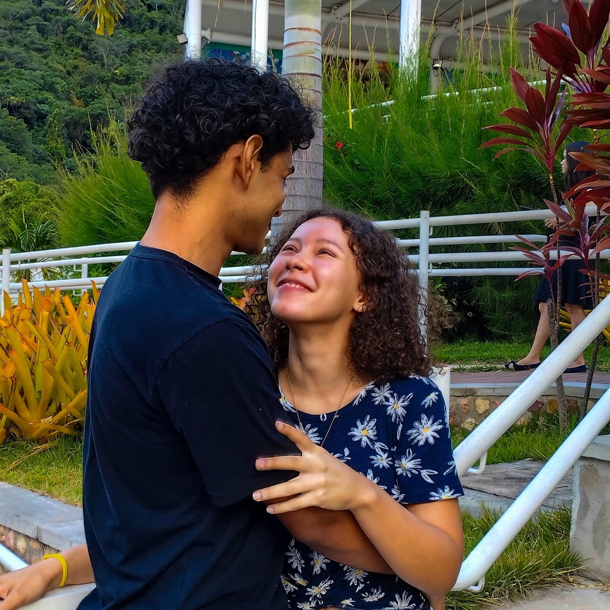
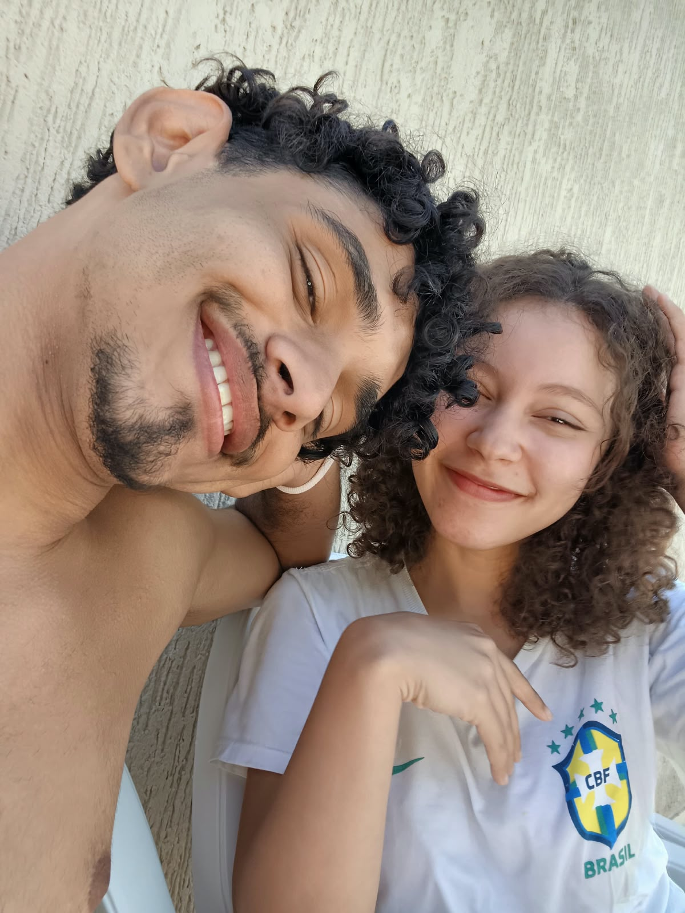
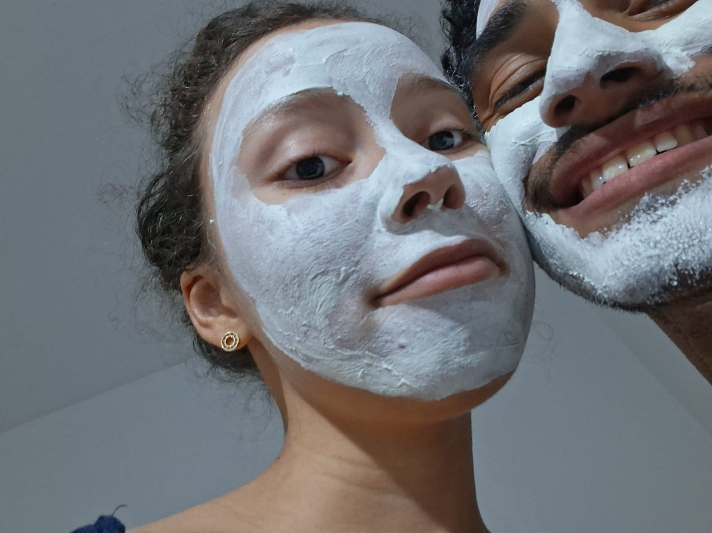

um site sobre nós
cada foto e um pedaço do que há de nós

eu te amo

espero que

possa ver

atraves

desse simples,

mas feito com amor

site

O quanto eu

eu te amo
obrigado por cada momento,e cada risadas e momentos com você,
cada lugar que a gente foi junto. faz parte um pedaço de mim
sei que oq eu fiz não foi correto e eu digo isso com meu coração eu me arrependo do fundo da minha alma durante o tempo que ficamos assim
diversas vezes conversei com Deus e chorei.
eu espero que possa vir a voltar a termos o sentimento que tinhamos
eu fiz o site porque com apenas palavras eu não posso mostrar como eu me sinto
sei que tenho varios erros e muitos. mas acima deles eu te amo, por favor me da só mais uma chance de te mostrar uma vida em que nós ficamos juntos crescemos juntos
e que sejamos felizes juntos, e se voce me der essa chance eu juro que não vou te decepcionar
desde o dia em que aconteceu eu não durmo mais sem pensar e só Deus sabe o sentimento que eu senti
as vezes eu preciso fugir de mim mesmo, as vezes eu me acho uma pessoa ruim e me odeio acho que eu sou só mais um peso nas vidas das pessoas, mas quando eu estou com voce essa parte de mim que me odeia some
desculpa ter falado aquilo com voce amor, pfvr espero que possa me desculpar, e entender que aquilo dito nunca foi sobre voce mas uma carta aberta sobre mim mesmo
espero que esse simples presente, possa te mostrar como eu quero me desculpar com você e apesar de simples e me desculpe por isso tambem que ele foi feito com muito amor
Eu te amo, Ana Julia.
eu quero partilhar a vida boa com voce 🎔